Useful tools for statistical data analysis
CESTA Workshop
May 14, 2018
Outline
Introduction
Hypothesis testing
Exploratory Data Analysis
Topic Modeling
Questions
Introduction
Self-introduction

I am a PhD student in ICME
My research focuses on developing statistical methods for high dimensional data which take account of non-uniform data density and variance.
I teach a short (4 weeks) introductory R course: https://cme195.github.io/
In our lab, we use microbiome data for inspiration, i.e. we look for problems that this data generates and try to solve them.
Digital Humanities?

Statistics
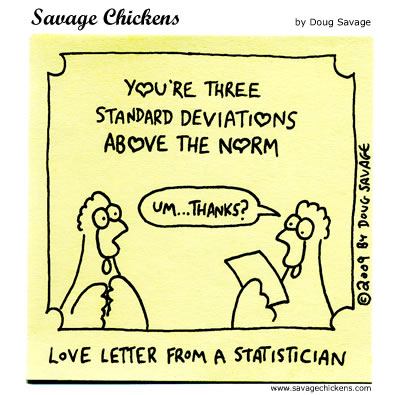
Helps you explore patterns hidden in your data making it easier to draw insights.
Provides formal frameworks for data analysis and for modeling.
Gives you means to tests your hypotheses ane evaluate significance of your findings.
Buzz words exercise
Books and classes
- Books:
- Introduction to Statistical Learning
by James, Witten, Hastie & Tibshirani - Elements of Statistical Learning
by Hasties, Tibshirani & Friedman - R for Data Science
by Grolemind and Wickham - Statistical Rethinking
by McElreath on Bayesian statistics
- Introduction to Statistical Learning
- Classes:
- STATS 116: Theory of Probability
- STATS 200: Introduction to Statistical Inference
- STATS 202: Data Mining and Analysis
- STATS 206: Applied Multivariate Analysis
- STATS 208: Introduction to the Bootstrap
- STATS 216: Introduction to Statistical Learning
Getting Free Help on Campus
[Stats Consulting] Advice on experimental design, model fitting, data analysis and interpretation of results etc.
[C2 Consulting] Computational questions on optimization, implementation, software libraries, computer clusters, code speed-up, parallelisation, etc.
Hypothesis testing
Coincidences
Consider an example of a seemingly extremely unlikely event:
- A woman won the New Jersey Lottery twice in four months. The event was widely reported as an amazing coincidence that beat odds of one in 17 trillion.
- However, the reported probability is a chance of the event happening to a specific person.
- A probability one should ask about is the one of this event happening to ANYONE in the US.
- … and this one is just one in 30.
Law of TRULY large numbers
Given a sample size large enough, any outrageous thing is likely to happen 2
Blade of grass paradox (Diaconis 1990)
If you were to stand in a field and reach down to touch a blade of grass, thereare millions of grass blades that you might touch.
But you will, in fact, touch one of them. The a priori fact that
the blade you touch will be any particular one has an extremely tiny
probability, but such an occurrence must take place if you are going
to touch a blade of grass.
Reproducible research
- The truth is, there are tons ways to model the data. Then, there are usually dozens of parameters associated with each model.
- Instead of worrying about whether you made a good choice all the time, just do the best you can, be honest and report everything!
- Never delete raw data.
- Document all decisions.
- Save your code and intermediate results.
- Share your program AND documentation with the public.
Hypothesis testing can be used to answer questions
- Is the measured quantity equal to/higher/lower than a given threshold?
- e.g. is the cooccurrence of a pair of words is higher than a certain level?
- Is there a significant difference between two groups of observations?
- e.g. is the frequency of certain words higher in one literary genre then another?
- Are the values two two quantities related?
- e.g. is there a correlation between tweet sentiment from certain people and a stocks market movement?
Steps required for hypothesis testing
- Define the null and the alternative hypothesis.
- Choose a level of significance \(\alpha\).
- Define and compute a test statistic.
- Compute a p-value.
- Decide whether to reject the null hypothesis by comparing p-value to \(\alpha\).
- Draw conclusion from the test.
Null and alternative hypotheses
A null hypothesis (\(H_0\)): A statement assumed to be true unless it can be shown incorrect beyond a reasonable doubt. This is something one usually attempts to disprove or discredit.
The alternate hypothesis (\(H_1\)): A claim that is contradictory to H0 and what we conclude when we reject H0.
H0 and H1 are on purporse set up to be contradictory, so that one can collect and examine data to decide if there is enough evidence to reject the null hypothesis or not.

Student’s t-test
William Gosset (1908), a chemist at the Guiness brewery.
Published in Biometrika under a pseudonym Student.
Used to select best yielding varieties of barley.
Now, is a widely adopted method for hypothesis testing.
One sample t-test
Test the null hypothesis: the mean of data is equal to \(\mu_0\)
\[ H_0: \mu = \mu_0 \\ H_a: \mu \ne \mu_0 \]
Test statistic:
\[ t = \frac{\bar X - \mu_0}{s / \sqrt{n}} \]
where \(\bar X\) is tha sample average, \(s\) is the sample standard deviation, and \(n\) is the number of observations.
Two sample (Welch’s) t-test
Test the null hypothesis: the mean is equal in both groups
\[ H_0: \mu_1 = \mu_2 \\ H_a: \mu_1 \ne \mu_2 \]
Test statistic:
\[ t = \frac{\bar X_1 - \bar X_2}{\sqrt{s_1^2/n_1 + s_2^2/n_2}} \]
Welch’s t-test used when the two population variances are not assumed to be equal.
Assumptions of t-test
- the sample mean – \(\bar X\) – is normally distributed,
- the sample variance – \(s^2\) – follows a scaled \(\chi^2\) distribution
- \(\bar X\) and \(s^2\) are independent
Note that:
Normality of individual observations \(X_1, X_2, \dots, X_n\) is not required.
Central limit theorem:
sample means of moderately large samples are often well-approximated by a normal distribution even if the data are not normally distributed
p-value
t-distribution with appropriate degrees of freedom

- p-value is a probability of observing the recorded event or a more extreme occurrence, assuming that \(H_0\) is true.
- Small p-value indicates strong evidence against \(H_0\). You should reject \(H_0\).
- Large p-value indicates weak evidence against \(H_0\). You CANNOT reject \(H_0\).
p-value
p-value can be written as \(P[\text{data} \mid H_0]\).
Note that:
\[P[\text{data} \; \mid \; \text{hypothesis} ] \ne P[\text{hypothesis} \; \mid \; \text{data}]\]
This is the reason why p-values should NOT be used for ranking or scoring different hypotheses.
p-values can only be used to reject a null hypothesis.
Also, null hypothesis cannot be proven true, you can only fail to reject it.
Example: one sample test
- A built-in dataset,
mtcars, that comes from a 1974 issue of Motor Trends magazine.
data("mtcars")
head(mtcars)## mpg cyl disp hp drat wt qsec vs am gear carb
## Mazda RX4 21.0 6 160 110 3.90 2.620 16.46 0 1 4 4
## Mazda RX4 Wag 21.0 6 160 110 3.90 2.875 17.02 0 1 4 4
## Datsun 710 22.8 4 108 93 3.85 2.320 18.61 1 1 4 1
## Hornet 4 Drive 21.4 6 258 110 3.08 3.215 19.44 1 0 3 1
## Hornet Sportabout 18.7 8 360 175 3.15 3.440 17.02 0 0 3 2
## Valiant 18.1 6 225 105 2.76 3.460 20.22 1 0 3 1- rows correspond to car models,
- column are car attributes: miles per gallon, number of cylinders, displacement, transmission etc.
Testing ‘mpg’ equal to a value
Is the mean fuel efficiency (mpg) in the cars in mtcars statistically equal to 25?
Two-sided test
\[H_0: \mu = 25 \\ H_a: \mu \ne 25\] where \(\mu\) is the mean mpg of cars in the dataset

mtcars$mpg## [1] 21.0 21.0 22.8 21.4 18.7 18.1 14.3 24.4 22.8 19.2 17.8 16.4 17.3 15.2
## [15] 10.4 10.4 14.7 32.4 30.4 33.9 21.5 15.5 15.2 13.3 19.2 27.3 26.0 30.4
## [29] 15.8 19.7 15.0 21.4tt <- t.test(x = mtcars$mpg, mu = 25, alternative = "two.sided")
tt##
## One Sample t-test
##
## data: mtcars$mpg
## t = -4.6079, df = 31, p-value = 6.587e-05
## alternative hypothesis: true mean is not equal to 25
## 95 percent confidence interval:
## 17.91768 22.26357
## sample estimates:
## mean of x
## 20.09062Testing ‘mpg’ smaller than a value
Is the mean fuel efficiency (mpg) in the cars in mtcars statistically less than 25?
One-sided test
\[H_0: \mu = 25 \\ H_a: \mu < 25\] where \(\mu\) is the mean mpg of cars in the dataset
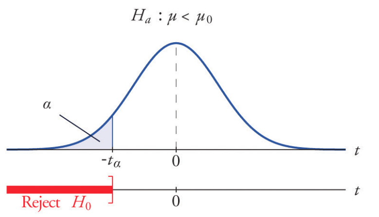
tt <- t.test(x = mtcars$mpg, mu = 25, alternative = "less")
tt##
## One Sample t-test
##
## data: mtcars$mpg
## t = -4.6079, df = 31, p-value = 3.293e-05
## alternative hypothesis: true mean is less than 25
## 95 percent confidence interval:
## -Inf 21.89707
## sample estimates:
## mean of x
## 20.09062Sign test
If \(n\) is small and \(\bar X\) is not normal, one can use distribution-free, non-parametric sign-test.
\[ H_0: \text{median} = \mu_0 \\ H_a: \text{median} > \mu_0 \]
\(V\) = Number of times \(X_i - \mu_0 > 0\)
\(V \sim \text{Binomial}(n, p = 1/2)\)
The probability of observed \(V\) under this distribution is now the p-value.
Bootstrap and permtation two-sample test
If sample means normality is satisfied, one can use permutation or bootstrap method to estimate the distribution of the test-statistic.
Permutation: rearranging of the group labels.
The p-value is the proportion of sampled data permutations where the the test statistic \(t_i\) was greater than or equal to the test statistics corresponding to the original (unpermuted) data \(t\).
Bootstrap: assign samples to each group by resampling with replacement Useful, when datasets are large.
Exploratory Data Analysis
Unsupervised Learning
- Inferring latent/hidden patterns and structures in unlabeled data (no class-assignents).
- Understanding the relationships between features or among observations.
- No special variables such as response or output variables, which need to be predicted.
- There are no prespecified classes or groups of observations. Ther is only X and no Y.
Dimensionality Reduction and Visualization
- Most of real life datasets are now high-dimensional e.g. text corpora, user internet activity, genetic sequencing data etc.
- DR or feature extraction methods can reduce the number of variables.
- The methods can be used to:
- compress the data
- remove redundant features and noise
- increase accuracy of learning methods by avoiding over-fitting and the curse of dimensionality
- Common methods for dimensionality reduction include: PCA, CA, ICA, MDS, Isomaps, Laplacian Eigenmaps, tSNE.
Voyant ScatterPlot = PCA or CA on word frequencies
Principal Component Analysis (PCA)
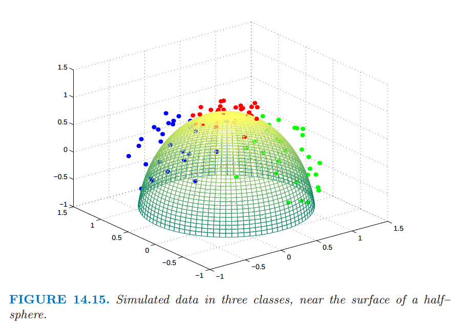

Source: ESL Chapter 14
Maximal Variance Projection
For \(X\in \mathbb{R}^{n \times p}\), \(\tilde X = (X - \bar X)\) is a centered data matrix.
PCA is an eigenvalue decomposition of the sample covariance matrix:
\[C = \frac{1}{n-1} \tilde X ^T \tilde X = \frac{1}{n-1} V \Sigma^2 V^T\]
- or (equivalently) a singular value decomposition (SVD) of \(\tilde X\) itself:
\[\tilde X = U \Sigma V^T \]
In the above \(U\) and \(V\) are orthodgonal matrices and \(\Sigma\) is a diagonal matrix.
- The projection of X into the space of principal components is called a component scores:
\[S = \tilde{X} V = U\Sigma V^T V = U\Sigma\]
- The weights of the variables in the PCA space, \(L = V\Sigma\), are called loadings.
Dimensionality reduction with PCA
- PCA finds a set of uncorrelated directions (components) that are linear combinations of the original data.
- These components sequentially explain most of the variation remaining subsequently in the data.
- Reduction occurs when the top \(k \ll \min(p, n)\) components are retained.
- The \(k\)-dimensional approximation of \(X\) is:
- \[S_k = U_k D_k\]
- where \(U_k\) is a matrix with \(k\) first columns of \(U\) and \(D_k\) is the diagonal matrix containing first \(q\) diagonal terms of \(D\)
What does it all mean?
You can use eiganvalues and eigenvectors generated by PCA to learn the structure of your data.
Most commonly, people use scree plots, as well as feature plots, sample plots and biplots to visualize PCA results.
Feature and sample plots are self-explanatory, we will explain what scree plots and biplots are.
Scree plot
- Eigenvalues are used to compute the amount of variance explained.
A scree plot can be used to choose how many components to retain for further analysis.
Choose the smallest number of PCs that explain a sizable amount of variation in the data.
Look for “elbows” in the scree plots i.e. points at which the proportion of variance explained by subsequent PCs drops off.
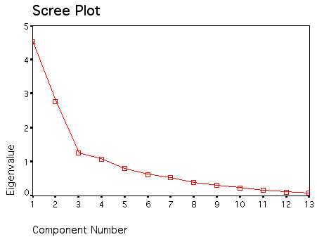
Biplot
Both samples and variables displayed in the same plot.
The US crime rates dataset
The built in dataset includes information on violent crime rates in the US in 1975.
head(USArrests)## Murder Assault UrbanPop Rape
## Alabama 13.2 236 58 21.2
## Alaska 10.0 263 48 44.5
## Arizona 8.1 294 80 31.0
## Arkansas 8.8 190 50 19.5
## California 9.0 276 91 40.6
## Colorado 7.9 204 78 38.7PCA in R
- In R, the function
prcomp()can be used to perform PCA. prcomp()is faster and preferred method overprincomp(); it is a PCA implementation based on SVD.
pca.res <- prcomp(USArrests, scale = TRUE)- The output of
prcomp()is a list containing:
names(pca.res)## [1] "sdev" "rotation" "center" "scale" "x"biplot(pca.res, scale=1, cex = 0.8)Correspondence Analysis (CA)
- Applies to data with measurements in same scale and units.
- Unlike PCA, CA is often used for categorical rather than continuous data.
- Specifically,CA is performed on a contingency tables – data tables with frequency distribution.
- Computations are the similar but slightly different than in PCA, and involve an initial data normalizion step.
Correspondence Analysis Computations
Input:
contingency table \(C \in \mathbb{R}^{n \times p}\) e.g. word frequencies in documents
Data transformation:
\[ M = \frac{1}{s}C - w_{row}w_{col}^T \]
where \(s = \text{sum all entries in C}\),
and
\[{\vec w}_{row} = \frac{1}{s} C\mathbf{1}, \\ {\vec w}_{col}^T = \frac{1}{s} \mathbf{1}^TC\]
Generalized SVD on \(M\)
\[M = U \Sigma V^T\]
with constraints:
\[U^T W_{row} U = I \; \text{ and } \; V^T W_{col} V= I\]
where \(W_{row}\) and \(W_{col}\) are diagonal matrices whose entries are \({\vec w}_{row}\), \({\vec w}_{col}\), defined in the previous slide.
The coordinates for rows and columns in the CA projection are then:
\[ F_n = W_n U \Sigma \\ F_p = W_p V \Sigma \]
Break for an exercise
Clustering
Cluster Analysis
- Clustering is an exploratory technique which can discover hidden groups that are important for understanding the data.
- Groupings are determined from the data itself, without any prior knowledge about labels or classes.
- There are the clustering methods available; a lot of them have an R implementaion available on CRAN.
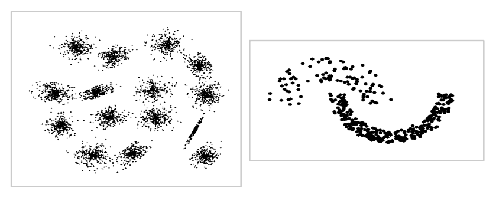
- To cluster the data we need a measure of similarity or dissimilarity between a pair of observations, e.g. an Euclidean distance.
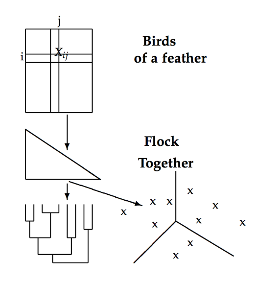
k-means
- k-means is a simple and fast iterative relocation method for clustering data into \(k\) distinct non-overlapping groups.
- The algorithm minimizes the variation within each cluster.

Source: link
k-means drawbacks
- The number clusters \(k\) must be prespecified (before clustering).
- The method is stochastic, and involves random initialization of cluster centers.
- This means that each time the algorithm is run, the results obtained can be different.
The number of clusters, \(k\), should be chosen using statistics such as:
Image segmentation
One of the application of k-means clustering is image segmentation.
Here we use a picture of a field of tulips in the Netherlands downloaded from here.
{kind=link}
Importing image to R
library(jpeg)
img <- readJPEG("./figs/Image.jpg")
(imgDm <- dim(img))## [1] 480 960 3- The image is a 3D array, so we will convert it to a data frame.
- Each row of the data frame should correspond a single pixel.
- The columns should include the pixel location (
xandy), and the pixel intensity in red, green, and blue (R,G,B).
# Assign RGB channels to data frame
imgRGB <- data.frame(
x = rep(1:imgDm[2], each = imgDm[1]),
y = rep(imgDm[1]:1, imgDm[2]),
R = as.vector(img[,,1]),
G = as.vector(img[,,2]),
B = as.vector(img[,,3])
)k-means in R
- Each pixel is a datapoint in 3D specifying the intensity in each of the three “R”, “G”, “B” channels, which determines the pixel’s color.
head(imgRGB, 3)## x y R G B
## 1 1 480 0 0.3686275 0.6980392
## 2 1 479 0 0.3686275 0.6980392
## 3 1 478 0 0.3725490 0.7019608- We use k-means to cluster the pixels \(k\) into color groups (clusters).
set.seed(43658) # Set seed as k-means involves a random initialization
k <- 2
kmeans.2clust <- kmeans(imgRGB[, c("R", "G", "B")], centers = k)
names(kmeans.2clust)## [1] "cluster" "centers" "totss" "withinss"
## [5] "tot.withinss" "betweenss" "size" "iter"
## [9] "ifault"# k cluster centers
kmeans.2clust$centers## R G B
## 1 0.5682233 0.3251528 0.1452832
## 2 0.6597320 0.6828609 0.7591578# The centers correspond to the following colors:
rgb(kmeans.2clust$centers)## [1] "#915325" "#A8AEC2"# Cluster assignment of the first 10 pixels
head(kmeans.2clust$cluster, 10)## [1] 2 2 2 2 2 2 2 2 2 2# Convert cluster assignment lables to cluster colors
kmeans.2colors <- rgb(kmeans.2clust$centers[kmeans.2clust$cluster, ])
head(kmeans.2colors, 10)## [1] "#A8AEC2" "#A8AEC2" "#A8AEC2" "#A8AEC2" "#A8AEC2" "#A8AEC2" "#A8AEC2"
## [8] "#A8AEC2" "#A8AEC2" "#A8AEC2"ggplot(data = imgRGB, aes(x = x, y = y)) +
geom_point(colour = kmeans.2colors) +
labs(title = paste("k-Means Clustering with", k, "clusters (colors)")) +
xlab("x") + ylab("y") + theme_bw()Now, increasing the number of clusters to 6:
Hierarchical clustering
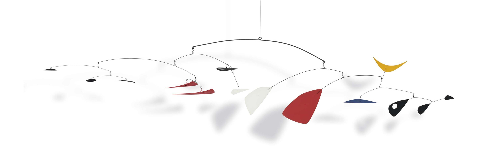
Alexander Calder’s mobile
- If it’s difficult (or if you simply don’t want) to choose the number of clusters ahead, you can do hierarchical clustering.
- Hierarchical clustering can be performed using agglomerative (bottom-up) or divisive (top-down) approach.
- The method requires a choice of a pairwise distance metric and a rule of how to merge or divide clusters.
- The output of the method can be represented as a graphical tree-based representation of the data, called a dendogram.
- By inspecting the tree, you can decide where to set the cutoff for observation grouping.
- There are also static and dynamic tree cutting algorithms.
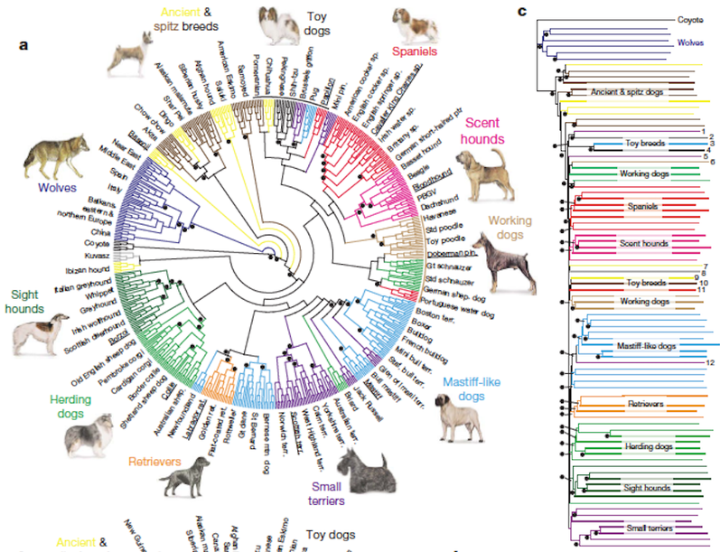

Hierarchical clustering algorithm
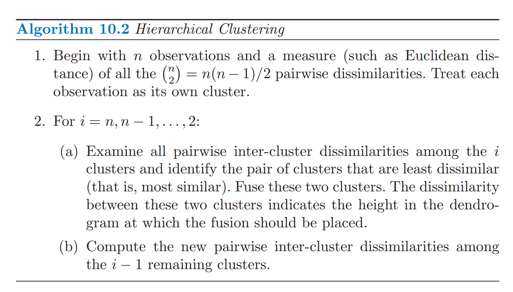
Source: ISL
Results for hierarchical clustering differ depending on the choice of:
A distance metric used for pairs of observations, e.g. Euclidean (L2), Manhattan (L1), Jaccard (Binary), etc
The rule used for grouping clusters that are already generated, e.g. minimum, maximum, average, or centroid cluster linkages.

Different ways to compute dissimilarity between 2 clusters:
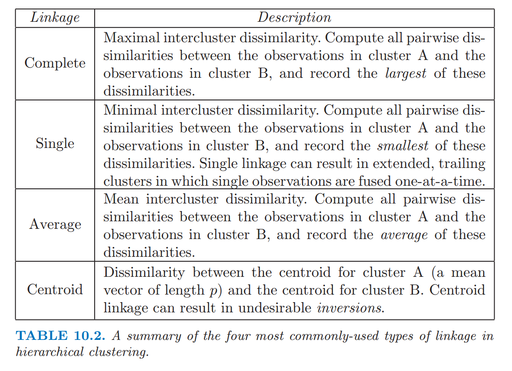
Topic modeling
Latent Dirichlet Allocation (LDA)
LDA is a generative model, which assumes that:
Each observation is a mixtures of topics.
Each topic is a mixture of tokens.
In textual analysis, topics might be themes e.g. “entertainment”, “politics”, or “sports”.
Observations can be documents or parts of documents.
Tokens are words.
LDA

Source: medium
LDA model
Let \(D\) be the number of documents, \(V\) the size of the vocabulary, and \(K\) the number of underlying topics.
\[ \boldsymbol\gamma_{d = 1, \dots, D} \sim \text{Dirichlet}(\boldsymbol\alpha) \\ \boldsymbol\beta_{k = 1, \dots, K} \sim \text{Dirichlet}(\boldsymbol\pi)\\ \]
\(\text{ for all } d = 1, \dots, D \text{ and } \; j \in N_d\) \[ z_{dj} \sim \text{Multinomial}_K(\boldsymbol\gamma_d)\\ w_{dj} \sim \text{Multinomial}_V(\boldsymbol\beta_{z_{dj}}) \]
where hyperparameters satisfy \(\alpha_k, \; \pi_v > 0\), \(\sum_{k = 1}^K\alpha_k = 1\), and \(\sum_{v = 1 }^{V}\pi_{v} = 1\).
Usually, \(\boldsymbol\alpha\), and \(\boldsymbol\pi\) are chosen to have equal entries, i.e. the topic and words distribution are assumed to have even priors.
Bayesian Inference for LDA parameters
Since, LDA is a full genrative model, we can write a joint probability for the entire model.
Hyper parameters \(\boldsymbol \alpha, \boldsymbol \pi\) can be integrated out.
The main goal is to estimate the posterior distributions of \(\boldsymbol \gamma_d\) for each document and \(\boldsymbol\beta_k\) for each topic.
Estimation is usually done via Gibbs sampling or variational Bayes approximation.

Random Forest
Random Forest
- Random Forest is an ensemble learning method based on classification and regression trees, CART, proposed by Breinman in 2001.
- RF can be used to perform both classification and regression.
- RF models are robust as they combine predictions calculated from a large number of decision trees (a forest).
- Details on RF can be found in Chapter 8 of ISL and Chapter 15 ESL; also a good write-up can also be found here
Decision trees
Cool visualization explaining what decision trees are: link
Decision tree on classification of Titanic Survivors:
Tree bagging Algorithm
Suppse we have an input data matrix, \(X \in \mathbb{R}^{N \times p}\) and a response vector, \(Y \in \mathbb{R}^N\).
For b = 1, 2, …, B:
\(\quad\) 1. Generate a random subset of the data \((X_b, Y_b)\) contatining \(n < N\)
\(\quad \;\) observations sampled with replacement.
\(\quad\) 2. Train a decision tree \(T_b\) on \((X_b, Y_b)\)
\(\quad\) 3. Predict the outcome for \(N-n\;\) unseen (complement) samples \((X_b', Y_b')\)
Afterwards, combine predictions from all decision trees and compute the average predicted outcome .
Averaging over a collection of decision trees makes the predictions more stable.
Decision trees for bootrap samples
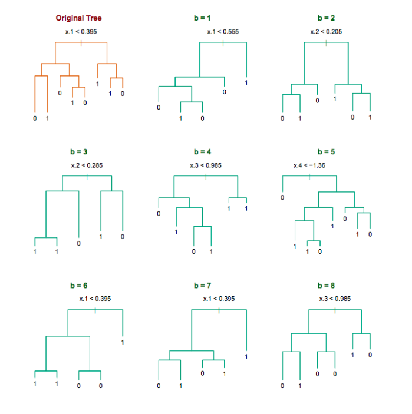
Source: Chapter 8 ESL
Random Forest Characteristics
Random forests differ in only one way from tree bagging: it uses a modified tree learning algorithm sometimes called feature bagging.
At each candidate split in the learning process, only a random subset of the features is included in a pool from which the variables can be selected for splitting the branch.
Introducing randomness into the candidate splitting variables, reduces correlation between the generated trees.
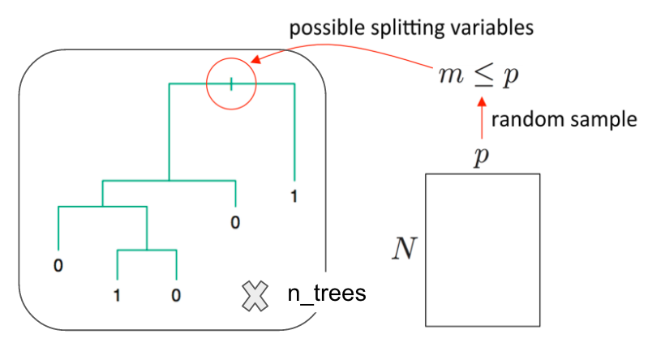

Source: link
Model Accuracy
When dealing with a supervised learning task, always evaluate your model’s performance on a test set
Test set is a collection of observations, which is set aside and not seen by the prediction method at all.
In case of RF, performance on train and test set should be similar, beacause RF minimizes training errors on observations unseen by the tree.
Confusion matrix can be used to asses the model accuracy.
RF also gives ‘importance measures’ for each predictor (feature).
Gold, Matthew K., and Lauren F. Klein, eds. Debates in the Digital Humanities 2016. Minneapolis; London: University of Minnesota Press, 2016.↩
Persi Diaconis & Frederick Mosteller (2012) Methods for Studying Coincidences, Journal of the American Statistical Association, 84:408, 853-861, DOI: 10.1080/01621459.1989.10478847↩